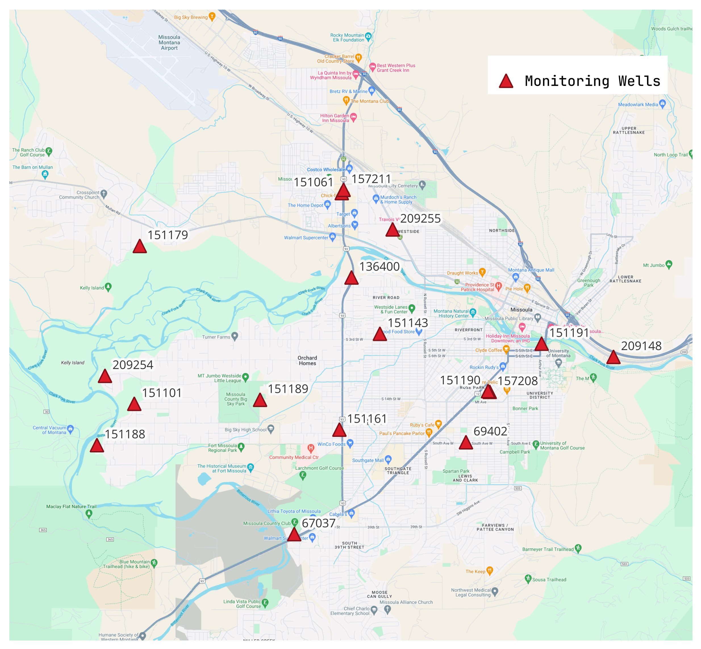
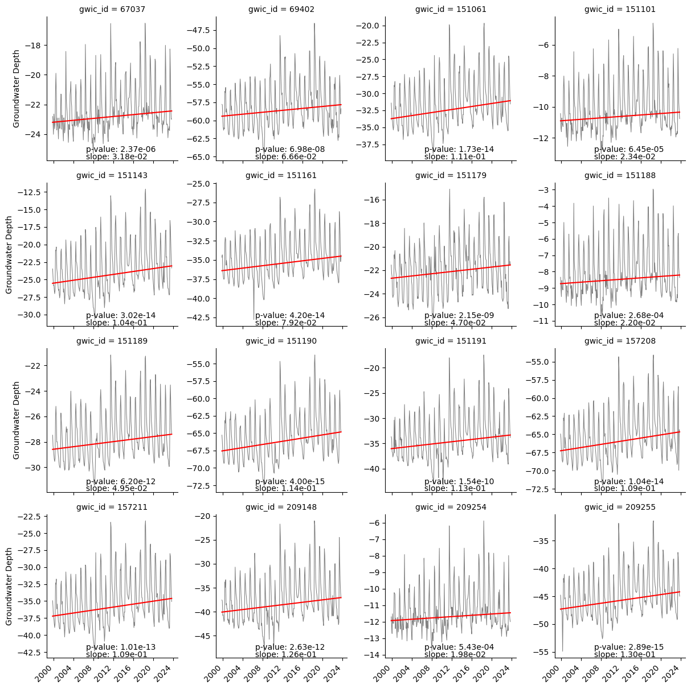
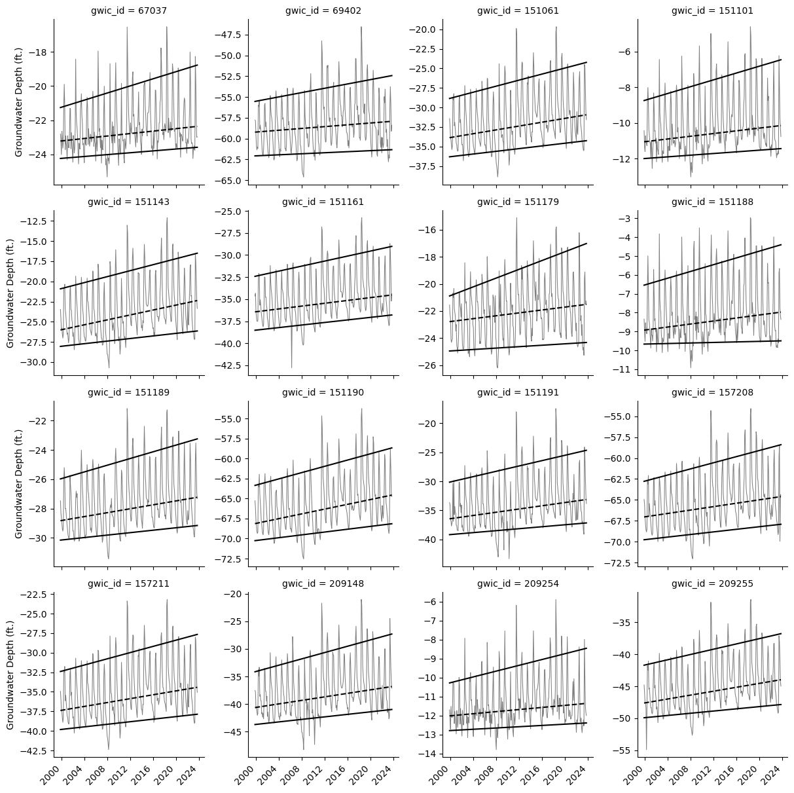
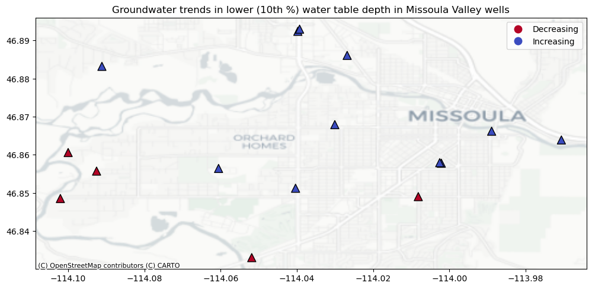

import syssys.path.append('/home/nick/workspace/zoo-aquifer')import pandas as pdimport numpy as npimport matplotlib.pyplot as pltimport geopandas as gpdimport contextily as ctxfrom shapely.geometry import Pointfrom sklearn.model_selection import train_test_splitfrom sklearn.linear_model import LinearRegressionfrom statsmodels.tsa.seasonal import STLfrom statsmodels.tsa.seasonal import seasonal_decomposeimport pymannkendall as mkfrom sklearn import metricsimport seaborn as snsfrom utils import viz
Code
# Set notebook parametersstart_date ='1999-10-01'end_date ='2023-09-30'
Code
# Bring in datadf = pd.read_csv('../data/missoula_valley_wells_imputed_qreg.csv')df_raw = pd.read_csv('../data/missoula_valley_monitored_wells.csv', parse_dates=['time'], index_col='time')df = df[(df['time'] >= start_date) & (df['time'] <= end_date)]df_static = pd.read_csv('../data/static_variables.csv')# Format streamflow dataq = df[['time', 'Q']]q.set_index('time', inplace=True)q.index = pd.to_datetime(q.index)# Format groundwater datadf_raw =-df_rawdepth_cols = [i for i in df.columns ifnot i in ['time', 'Q', 'pumping_rate']]for col in depth_cols: df[col] *=-1# Melt groundwater datadf_melt = df.drop(columns='Q').melt(id_vars='time')df_melt['time'] = pd.to_datetime(df_melt['time'])df_melt.rename(columns={'variable':'gwic_id'}, inplace=True)
Methods
Study Area
The study area includes the greater Missoula area. Within this region there are 16 monitoring wells used in the analysis Figure 1.

Figure 1: The study site including the 16 monitoring wells used in the analysis.
Data Imputation
Historical groundwater measurements from the 16 sites were taken sporadically and inconsistently (Figure 2). Therefore, in order to compare across all sites we needed to fill the data gaps and resample to monthly average values. We gap-filled the data using a mulitple linear regression imputation method based on the Clark Fork River monthly average flow and the day of the year (i.e. last day of the month) to create consistent monthly data across all water years (2000-2023) in each monitoring well used in the study. We tested several other methods including linear interpolation, time-based interpolation, and seasonal trend decomposition using LOESS (STL) by iterating the method 100 times and leaving out 5 known data points to later predict with the model. The multiple linear regression data imputation method proved to have the best error statistics across the all metrics (MAE, MSE, RMSE, MAPE, and R-squared).
Figure 2: The groundwater data points for each well before imputation. Color represents the value of the measurement (i.e. depth below ground).
Historical Analysis
Clark Fork River
The Clark Fork River serves as the main source for aquifer recharge in the Missoula Valley (Tallman 2005). While other inputs exist, we focus almost exclusively on the Clark Fork due to the overall magnitude relative to other inputs, and the high temporal correlation with one another that all the inputs exhibit [CITE Johnnie analysis]. A seasonal decomposition using LOESS (Figure 3) shows that there has been a consistent increasing trend in monthly average flows over the study period (2000-2023). In addition, as expected, there is a strong seasonality component with peak flows coming in late spring and baseflows in late summer and early fall.
Figure 3: Seasonal decomposition of the Clark Fork River monthly streamflows. The top figure is the full stremflow signal, the second from the top shows the trend over the time, the third from the top figure is the seasonal signal, and the bottom figure is the residual after the trend and seasonal components have been removed.
We investigate the trend further using a Mann-Kendall test (Mann (1945), Kendall (1975)), which avoids assumptions of normality and independence. The results indicate a statistically significant (\(p<0.5\)) increasing trend of 24 cfs/month. We further break down the trend analysis into seasons: winter (December, January, February), spring (March, April, May), summer (June, July, August), and fall (September, October, November) (Figure 4). All four seasons have increasing trends, although the summer season’s trend is not statistically significant at the \(p<0.5\) level.
Figure 4: Seasonal trends for Clark Fork River flows. Red line indicates a statistically significant (\(p<0.05\)) trend.
Groundwater Table Depth
We evaluated trends in groundwater table depth for each of the 16 wells within the study site using the Mann-Kendall test. All 16 wells have significantly increasing trends and strong seasonality similar to the Clark Fork River streamflow (Figure 5).
Code
# Calculate trends and p-values and add to the DataFramedf_trend = df_melt.copy()df_trend['timestamp'] = df_trend['time'].apply(lambda x: x.timestamp() if pd.notnull(x) else x)# Group the data by the 'variable' column and apply the 'get_trend' functiontrends = df_trend.groupby('gwic_id').apply(viz.get_mk_trend)# Join the 'trends' DataFrame with the 'df_trend' DataFramedf_trend = df_trend.join(trends, on='gwic_id')# Create the FacetGrid plotg = sns.FacetGrid(df_trend, col='gwic_id', col_wrap=4, sharey=False, sharex=True)# Map the plot_data_and_trendline function to the FacetGridg.map_dataframe(viz.plot_data_and_trendline, mann_kendall=True)g.set_ylabels('Groundwater Depth')# Rotate the x-tick labels on all subplotsfor ax in g.axes.flat:for label in ax.get_xticklabels(): label.set_rotation(45) label.set_horizontalalignment('right')plt.show()

Figure 5: Trends in groundwater depth for the 16 wells within the study area. Red line indicates a statistically significant trend (\(p<0.05\)).
Additionally, we calculated the 10th, 50th, and 90th quantile regression lines to show trends in lower, median, and upper values, respectively (Figure 6). The results show strong increasing trends in the upper quantile of each well, suggesting that increases in peak recharge events are largely driving the overall trend in the groundwater. Median and lower quantiles show less of an increasing trend and sometimes even decreasing trends. The decreasing trends in the lower quantiles tend to located in the south and west regions the study site (Figure 7). The difference in trends between the 90th and 10th percentile also suggest an overall increase in interannual variability throughout the time period.
Code
# Create the FacetGrid plotg = sns.FacetGrid(df_trend, col='gwic_id', col_wrap=4, sharey=False, sharex=True)# Map the plot_data_and_trendline function to the FacetGridg.map_dataframe(viz.plot_data_and_quantreg)g.set_ylabels('Groundwater Depth (ft.)')# Rotate the x-tick labels on all subplotsfor ax in g.axes.flat:for label in ax.get_xticklabels(): label.set_rotation(45) label.set_horizontalalignment('right')plt.show()

Figure 6: Upper (90th percentile), median (50th percentile, dashed), and lower (10th percentile) trends in groundwater data. The 90th percentile trends are consistently the largest, suggesting increases in peak recharge events and interannual variability.
Code
# Calculate slope of quantile regression linesgwicids = df_trend['gwic_id'].unique()df_quantreg = pd.DataFrame(columns=['gwicid', 'quantreg_m1', 'quantreg_m9', 'quantreg_m5'])for gwicid in gwicids: data = df_trend[df_trend['gwic_id'] == gwicid] q1, q9, q5 = viz.plot_data_and_quantreg(data, 'blue', quants=[0.1, 0.9], plot=False) m1, m9, m5 = q1.params.x, q9.params.x, q5.params.x new_data = [gwicid, m1, m9, m5] df_quantreg.loc[len(df_quantreg)] = new_data# Add trends to spatial dataframetrends.index = trends.index.astype('int64')df_stat = df_static.merge(trends, left_on='gwicid', right_index=True)df_stat['gwicid'] = df_stat['gwicid'].astype(str)df_stat = df_stat.merge(df_quantreg, left_on='gwicid', right_on='gwicid') # Convert to GeoDataFramedf_stat['geometry'] = [Point(xy) for xy inzip(df_stat.longitude, df_stat.latitude)]gdf_stat = gpd.GeoDataFrame(df_stat, geometry='geometry', crs='EPSG:4326')# Plot map of slope valuesax = gdf_stat.plot(figsize=(12, 6), column='quantreg_m1', cmap='coolwarm_r', legend=True, edgecolor='black', marker='^', scheme='User_Defined', classification_kwds=dict(bins=[0]), s=100)# Change legend textleg_text = ['Decreasing', 'Increasing']leg = ax.get_legend()for i, l inenumerate(leg.get_texts()): l.set_text(leg_text[i])ctx.add_basemap(ax, crs=gdf_stat.crs, source=ctx.providers.CartoDB.Positron, zoom=12)# cbar = ax.get_figure().get_axes()[1]# cbar.set_ylabel('slope (ft/mo)')ax.set_title('Groundwater trends in lower (10th %) water table depth in Missoula Valley wells')# ax.set_axis_off()plt.show()

Figure 7: Trends in lower (10th percentile) groundwater depths. The red markers indicate decreasing trends. The blue markers indicate increasing trends.
Pumping Rates and Groundwater Depth
It is clear that the Clark Fork River has significant influence over the trends and seasonality in the groundwater table.
References
Kendall, Maurice George. 1975. “Rank Correlation Methods.”
Mann, Henry B. 1945. “Nonparametric Tests Against Trend.”Econometrica: Journal of the Econometric Society, 245–59. https://www.jstor.org/stable/1907187.
Tallman, Amelia. 2005. “Sources of Water Captured by Municipal Supply Wells in a Highly Conductive Aquifer Western Montana.”Graduate Student Theses, Dissertations, & Professional Papers, January.